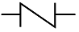

에너지관리기능사 (2012-02-12 기출문제)
1과목: 임의 구분
1. 수관식 보일러의 종류에 속하지 않는 것은?
- 자연순환식
- 강제순환식
- 관류식
- 노통연관식
(정답률: 83%)

2. 건포화 증기 100℃의 엔탈피는 얼마인가?
- 639Kcal/kg
- 539kcal/kg
- 100kcal/kg
- 439kcal/kg
(정답률: 70%)
3. 분사관을 이용해 선단에 노즐을 설치하여 청소하는 것으로 고온의 전열면에 사용하는 슈트블로워의 형식은?
- 롱레트랙터블형
- 로터리형
- 건 형
- 에어히터클리너형
(정답률: 82%)
4. 공기 과잉계수를 증가 시킬 때, 연소가스 중의 성분 함량이 공기 과잉계수에 맞춰서 증가하는 것은?
- CO2
- SO2
- O2
- CO
(정답률: 72%)
5. 보일러의 연소가스 폭발 시에 대비한 안전장치는?
- 방폭문
- 안전밸브
- 파괴판
- 맨홀
(정답률: 92%)
6. 연료의 인화점에 대한 설명으로 가장 옳은 것은?
- 가연물을 공기 중에서 가열했을 때 외부로부터 점화원 없이 발화하여 연소를 일으키는 최저 온도
- 가연성 물질이 공기 중의 산소와 혼합하여 연소할 경우에 필요한 혼합가스의 농도 범위
- 가연성 액체의 증기 등이 불씨에 의해 불이 붙는 최저 온도
- 연료의 연소를 계속 시키기 위한 온도
(정답률: 75%)
7. 다음 중 파형 노통의 종류가 아닌 것은?
- 모리슨형
- 아담슨형
- 파브스형
- 브라운형
(정답률: 74%)
8. 주철제 보일러의 일반적인 특징 설명으로 틀린 것은?
- 내열성과 내식성이 우수하다.
- 대용량의 고압보일러에 적합하다.
- 열에 의한 부동팽창으로 균열이 발생하기 쉽다.
- 쪽수의 증감에 따라 용량조절이 편리하다.
(정답률: 84%)
9. 증기의 압력에너지를 이용하여 피스톤을 작동시켜 급수를 행하는 비동력 펌프는?
- 워싱턴펌프
- 기어펌프
- 볼류트펌프
- 디퓨져펌프
(정답률: 81%)
10. 보일러 효율을 올바르게 설명한 것은?
- 증기발생에 이용된 열량과 보일러에 공급한 연료가 완전 연소할 때의 열량과의 비
- 배기가스 열량과 연소실에서 발생한 열량과의 비
- 연도에서 열량과 보일러에 공급한 연료가 완전 연소할 때의 열량과의 비
- 총 손실 열량과 연료의 연소 열량과의 비
(정답률: 69%)
11. 다음 중 매연 발생의 원인이 아닌 것은?
- 공기량이 부족할 때
- 연료와 연소장치가 맞지 않을 때
- 연소실의 온도가 낮을 때
- 연소실의 용적이 클 때
(정답률: 77%)
12. 절탄기에 대한 설명 중 옳은 것은?
- 절탄기의 설치 방식은 혼합식과 분배식이 있다.
- 절탄기의 급수예열온도는 포화온도 이상으로 한다.
- 연료의 절약과 증발량의 감소 및 열효율을 감소시킨다.
- 급수와 보일러수의 온도차 감소로 열응력을 줄여준다.
(정답률: 67%)
13. 어떤 고체연료의 저위발열량이 6940Kcal/kg이고 연소 효율이 92%이라 할 때 이 연료의 단위량의 실제 발열량을 계산하면 약 얼마인가?
- 6385kcal/kg
- 6943kcal/kg
- 7543kcal/kg
- 8900kcal/kg
(정답률: 62%)
14. 보일러의 마력을 옳게 나타낸 것은?
- 보일러마력 = 15.65 × 매시 상당증발량
- 보일러마력 = 15.65 x 매시 실제증발량
- 보일러마력 = 15.65 / 매시 상당증발량
- 보일러마력 = 매시 상당증발량 / 15.65
(정답률: 68%)
15. 다음 중 비접촉식 온도계의 종류가 아닌 것은?
- 광전관식 온도계
- 방사 온도계
- 광고 온도계
- 열전대 온도계
(정답률: 79%)
16. 다음 중 보일러에서 연소가스의 배기가 잘 되는 경우는?
- 연도의 단면적이 작을 때
- 배기가스 온도가 높을 때
- 연도에 급한 굴곡이 있을 때
- 연도에 공기가 많이 침입 될 때
(정답률: 85%)
17. 일반적으로 보일러 판넬 내부 온도는 몇 도를 넘지 않도록 하는 것이 좋은가?
- 70℃
- 60℃
- 80℃
- 90℃
(정답률: 80%)
18. 수관식 보일러에서 건조 증기를 얻기 위하여 설치하는 것은?
- 급수내관
- 기수 분리기
- 수위 경보기
- 과열 저감기
(정답률: 89%)
19. 온수보일러의 수위계 설치 시 수위계의 최고 눈금은 보일러의 최고 사용압력의 몇 배로 하여야 하는가?
- 1배 이상 3배 이하
- 3배 이상 4배 이하
- 4배 이상 6배 이하
- 7배 이상 8배 이하
(정답률: 81%)
20. 액체연료의 연소용 공기 공급방식에서 1차 공기를 설명한 것으로 가장 적합한 것은?
- 연료의 무화와 산화반응에 필요한 공기
- 연료의 후열에 필요한 공기
- 연료의 예열에 필요한 공기
- 연료의 완전 연소에 필요한 부족한 공기를 추가로 공급 하는 공기
(정답률: 66%)
2과목: 임의 구분
21. 그림 기화와 같은 밸브의 종류 명칭은?

- 게이트 밸브
- 체크 밸브
- 볼 밸브
- 안전 밸브
(정답률: 86%)
22. 보일러의 검사기준에 관한 설명으로 틀린 것은?
- 수압시험은 보일러의 최고 사용압력이 15kg/cm2를 초과 할 때에는 그 최고 사용압력의 1.5배의 압력으로 한다.
- 보일러 운전 중에 비눗물 시험 또는 가스누설검사기로 배관접속부위 및 밸브류 등의 누설유무를 확인한다.
- 시험수압은 규정된 압력의 8% 이상을 초과하지 않도록 모든 경우에 대한 적절한 제어를 마련하여야 한다.
- 화재, 천재지변 등 부득이한 사정으로 검사를 실시할 수 없는 경우에는 재신청 없이 다시 검사를 하여야 한다.
(정답률: 71%)
23. 보일러 보존 시 건조제로 주로 쓰이는 것이 아닌 것은?
- 실리카겔
- 활성알루미나
- 염화마그네슘
- 염화칼슘
(정답률: 59%)
24. 배관의 신축이음 종류가 아닌 것은?
- 슬리브형
- 벨로즈형
- 루프형
- 파이롯형
(정답률: 78%)
25. 진공환수식 증기 배관에서 리프트 피팅으로 흡상할 수 있는 1단 최고 흡상 높이는 몇m 이하로 하는 것이 좋은가?
- 1m
- 1.5m
- 2m
- 2.5m
(정답률: 85%)
26. 난방부하 계산과정에서 고려하지 않아도 되는 것은?
- 난방형식
- 유리창의 크기 및 문의 크기
- 주위환경 조건
- 실내와 외기의 온도
(정답률: 62%)
27. 다음 보온재의 종류 중 안전사용 최고온도가 가장 낮은 것은?
- 펄라이트보온판,통
- 탄화코르판
- 글라스울블랭킷
- 내화단열벽돌
(정답률: 53%)
28. 다음 중 보일러 손상의 하나인 압궤가 일어나기 쉬운 부분은?
- 수관
- 노통
- 동체
- 갤러웨이관
(정답률: 58%)
29. 다음 중 보일러의 안전장치에 해당되지 않는 것은?
- 방출밸브
- 방폭문
- 화염검출기
- 감압밸브
(정답률: 74%)
30. 열전도율이 다른 여러 층의 매체를 대상으로 정상상태에서 고온측으로부터 저온측으로 열이 이동할 때의 평균 열 통과율을 의미하는 것은?
- 엔탈피
- 열복사율
- 열관류율
- 열용량
(정답률: 81%)
31. 기체연료의 연소방식과 관계가 없는 것은?
- 확산 연소방식
- 예혼합 연소방식
- 포트형과 버너형
- 회전 분무식
(정답률: 69%)
32. 건도를 x라고 할 때 습증기는 어느 것인가?
- x = 0
- 0 < x < 1
- x = 1
- x > 1
(정답률: 76%)
33. 보일러 급수 펌프인 터빈펌프의 일반적인 특징이 아닌 것은?
- 효율이 높고 안정된 성능을 얻을 수 있다.
- 구조가 간단하고 취급이 용이하므로 보수관리가 편리하다.
- 토출 시 흐름이 고르고 운전상태가 조용하다.
- 저속회전에 적합하며 소형이면서 경량이다
(정답률: 76%)
34. 보일러 부속장치 설명중 잘못된 것은?
- 기수분리기: 증기 중에 혼입된 수분을 분리하는 장치
- 슈트 블로워 : 보일러 동 저면의 스케일, 침전물 등 밖으로 배출하는 장치
- 오일스트레이너 : 연료속의 불순물 방지 및 유량계 펌프 등의 고장을 방지하는 장치
- 스팀 트랩: 응축수를 자동으로 배출하는 장치
(정답률: 84%)
35. 고체연료와 비교하여 액체연료 사용 시의 장점을 잘못 설명한 것은?
- 인화의 위험성이 없으며 역화가 발생하지 않는다.
- 그을음이 적게 발생하고 연소효율도 높다.
- 품질이 비교적 균일하며 발열량이 크다.
- 저장 및 운반 취급이 용이하다.
(정답률: 81%)
36. 집진 효율이 대단히 좋고, 0.5μm이하 정도의 미세한 입자도 처리할 수 있는 집진장치는?
- 관성력 집진기
- 전기식 집진기
- 원심력 집진기
- 멀티사이크론식 집진기
(정답률: 86%)
37. 열정산의 방법에서 입열 항목에 속하지 않는 것은?
- 발생증기의 흡수열
- 연료의 연소열
- 연료의 현열
- 공기의 현열
(정답률: 62%)
38. 보일러의 자동제어 장치로 쓰이지 않는 것은?
- 화염검출기
- 안전밸브
- 수위 검출기
- 압력조절기
(정답률: 59%)
39. 급수온도 30℃에서 압력 1MPa 온도 180℃의 증기를 1시간당 10000kg 발생 시키는 보일러에서 효율은 약 몇%인가? (단, 증기 엔탈피는 664kcal/kg , 표준상태에서 가스 사용량은 500m3/h, 이 연료의 저위 발열량은 15000kcal/m3이다.)
- 80.5%
- 84.5%
- 87.65%
- 91.65%
(정답률: 51%)
40. 보일러의 사고발생 원인 중 제작상의 원인에 해당되지 않는 것은?
- 용접불량
- 가스폭발
- 강도부족
- 부속장치미비
(정답률: 84%)
3과목: 임의 구분
41. 엘보나 티와 같이 내경이 나사로 된 부품을 폐쇄할 필요가 있을 때 사용되는 것은?
- 캡
- 니펄
- 소켓
- 플러그
(정답률: 62%)
42. 사용 중인 보일러의 점화전 주의사항으로 잘못된 것은?
- 연료 계통을 점검한다.
- 각 밸브의 개폐 상태를 확인한다.
- 댐퍼를 닫고 프리퍼지를 한다.
- 수면계의 수위를 확인한다.
(정답률: 92%)
43. 호칭지름 15A 의 강관을 굽힘 반지름 80mm, 각도 90°로 굽힐 때 굽힘부의 필요한 중상 곡선부 길이는 약 몇 mm인가?
- 126
- 135
- 182
- 251
(정답률: 56%)
44. 난방 부하가 2250kcal/h 인 경우 온수 방열기의 방열면적은 몇 m2인가?
- 3.5
- 4.5
- 5.0
- 8.3
(정답률: 73%)
45. 증기 트랩을 기계식 트랩, 온도조절식트랩, 열역학적트랩 으로 구분할 때 온도조절식 트랩에 해당되는 것은?
- 버킷 트랩
- 블로트 트랩
- 열동식 트랩
- 디스크형 트랩
(정답률: 77%)
46. 철금속가열로란 단조가 가능하도록 가열하는 것을 주목적으로 하는 노로써 정격 용량이 몇kcal/h를 초과하는 것을 말하는가?
- 200000
- 500000
- 100000
- 300000
(정답률: 66%)
47. 연소시작 시 부속설비 관리에서 급수 예열기에 대한 설명으로 틀린 것은?
- 바이패스 연도가 잇는 경우에는 연소가스를 바이패스시켜 물이 급수 예열기 내를 유동하게 한 후 연소가스를 급수 예열기 연도에 보낸다.
- 댐퍼 조작은 급수 예열기 연도의 입구 댐퍼를 먼저 연 다음에 출구 댐퍼를 열고 최후에 바이패스 연도 댐퍼를 닫는다.
- 바이패스 연도가 없는 경우 순환관을 이용하여 급수 예열기 내의 물을 유동시켜 급수 예열기 내부에 증기가 발생하지 않도록 주의한다.
- 순환관이 없는 경우는 보일러에 급수하면서 적량의 보일러수 분출을 실시하여 급수 예열기 내의 물을 정체 시키지 않도록 하여야 한다.
(정답률: 72%)
48. 급수 탱크의 설치에 대한 설명 중 틀린 것은?
- 급수탱크를 지하에 설치하는 경우에는 지하수, 하수, 침출수 등이 유입되지 않도록 하여야 한다.
- 급수 탱크의 크기는 용도에 따라 1~2시간 정도 급수를 공급할 수 있는 크기로 한다.
- 급수 탱크는 얼지 않도록 보온 등 방호조치를 하여야 한다.
- 탈기기가 없는 시스템의 경우 급수에 공기 용입 우려로 인해 가열장치를 설치해서는 안 된다.
(정답률: 76%)
49. 온수난방에서 역귀환방식을 채택하는 주된 이유는?
- 각방열기에 연결된 배관의 신축을 조정하기 위해서
- 각방열기에 연결된 배관길이를 짧게 하기 위해서
- 각 방열기에 공급되는 온수를 식지 않게 하기 위해서
- 각 방열기에 공급되는 유량분배를 균등하게 하기 위해서
(정답률: 70%)
50. 본래 배관의 회전을 제한하기 위하여 사용되어 왔으나 근래에는 배관계의 축 방향의 안내 역할을 하며 축과 직각 방향의 이동을 구속하는데 사용되는 레스트레인트의 종류는?
- 앵커
- 가이드
- 스토퍼
- 이어
(정답률: 66%)
51. 온실가스 배출량 및 에너지 사용량 등의 보고와 관련하여 관리업체는 해당 연도 온실가스 배출량 및 에너지 소비량에 관한 명세서를 작성하고 이에 대한 검증기관의 검증 결과를 언제까지 부문별 관장기관에게 제출하여야 하는가?
- 해당 연도 12월 31일까지
- 다음 연도 1월 31일까지
- 다음 연도 3월 31일까지
- 다음 연도 6월 30일까지
(정답률: 61%)
52. 에너지 이용 합리화법의 목적이 아닌 것은?
- 에너지의 수급 안정
- 에너지의 합리적이고 효율적인 이용 증진
- 에너지 소비로 인한 환경피해를 줄임
- 에너지 소비 촉진 및 자원 개발
(정답률: 85%)
53. 정부는 국가전략을 효율적, 체계적으로 이행하기 위해 몇 년마다 저탄소 녹색 성장 국가전략 5개년 계획을 수립하는가?
- 2년
- 3년
- 4년
- 5년
(정답률: 89%)
54. 에너지 이용합리화법상 효율관리 기자재가 아닌 것은?
- 심상유도전동기
- 선박
- 조명기기
- 전기냉장고
(정답률: 82%)
55. 신축, 증축 또는 개축하는 건축물에 대하여 그 설계 시 산출된 예상 에너지 사용량의 일정 비율 이상을 신·재생 에너지를 이용하여 공급되는 에너지를 사용하도록 신·재생 에너지 설비를 의무적으로 설치하게 할 수 있는 기관이 아닌 것은?
- 공기업
- 종교단체
- 국가 및 지방자치단체
- 특별법에 다라 설립된 법인
(정답률: 89%)
56. 다음 중 유기질 보온재에 속하지 않는 것은?
- 펠트
- 세라크울
- 코르크
- 기포성 수지
(정답률: 58%)
57. 동관 작업용 공구의 사용목적이 바르게 설명된 것은?
- 플레이어링 툴 세트 : 관 끝을 소켓으로 만듦
- 익스팬더 : 직관에서 분기관 성형 시 사용
- 사이징 툴: 관 끝을 원형으로 정형
- 튜브 벤더 : 동관을 절단함
(정답률: 72%)
58. 온수난방의 배관 시공법에 관한 설명으로 틀린 것은?
- 배관 구배는 일반적으로 1/250 이상으로 한다.
- 운전 중에 온수에서 분리한 공기를 배제하기 위해 개방식 팽창 탱크로 향하여 선상향 구배로 한다.
- 수평 배관에서 관지름을 변경할 경우 동심 이음쇠를 사용한다.
- 온수보일러에서 팽창탱크에 이르는 팽창관에는 되도록 밸브를 달지 않는다.
(정답률: 53%)
59. 황수관의 배관방식에 의한 분류 중 환수 주관을 보일러의 표준 수위보다 낮게 배관하여 환수하는 방식은 어떤 배관 방식인가?
- 건식환수
- 중력환수
- 기계환수
- 습식환수
(정답률: 66%)
60. 에너지 이용 합리화법의 위반사항과 벌칙 내용이 맞게 짝 지워진 것은?
- 효율관리기자재 판매금지 명령 위반 시- 1천만 원 이하의 벌금
- 검사대상기기 조종자를 선임하지 않을 시 - 5백만 원 이하의 벌금
- 검사대상기기 검사의무 위반 시 - 1년 이하의 징역 또는 1천만 원 이하의 벌금
- 효율관리기자재 생산명령 위반 시 - 5백만 원 이하의 벌금
(정답률: 74%)